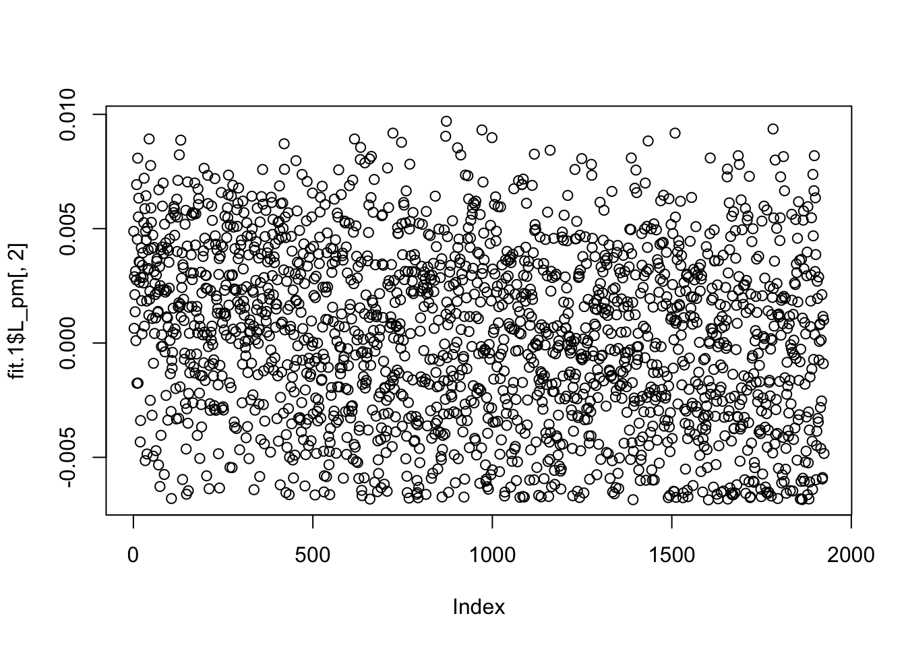
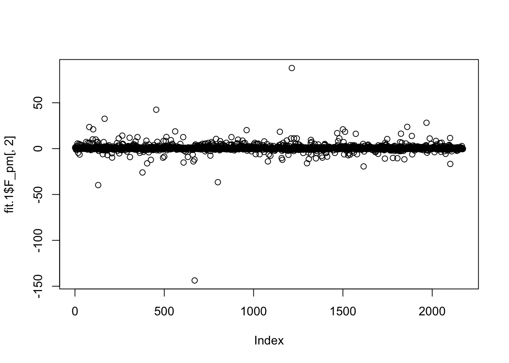
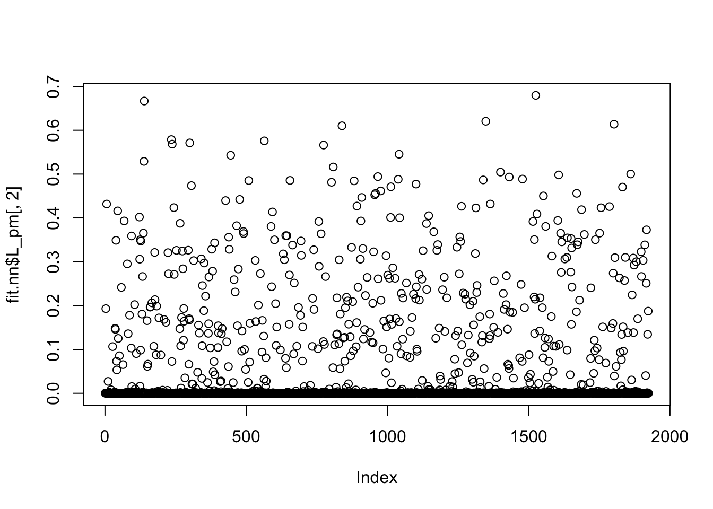
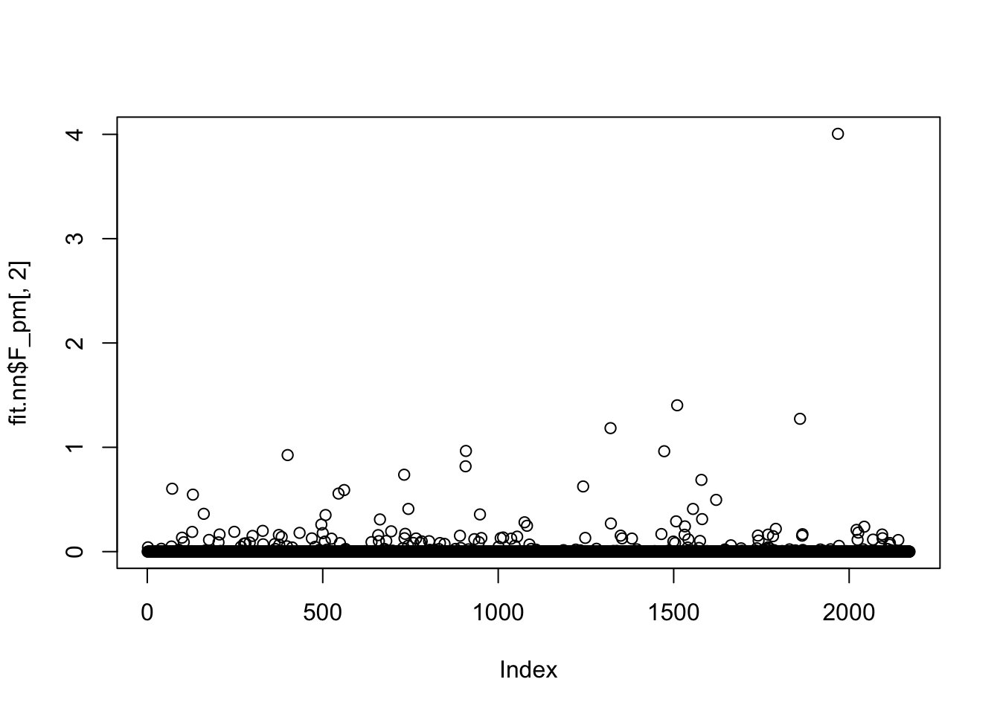
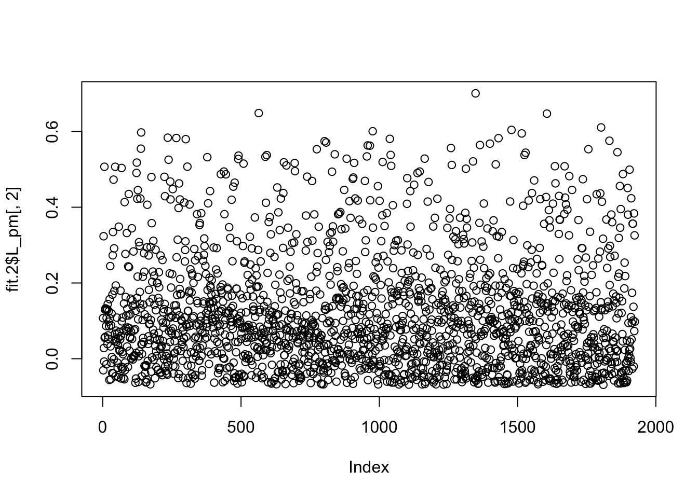
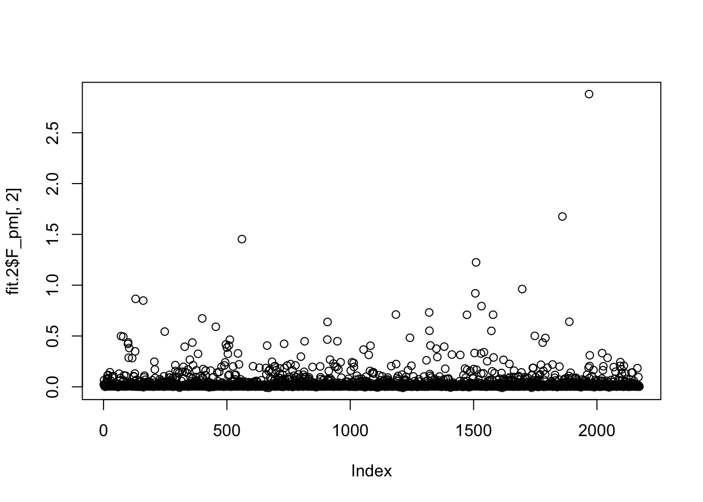
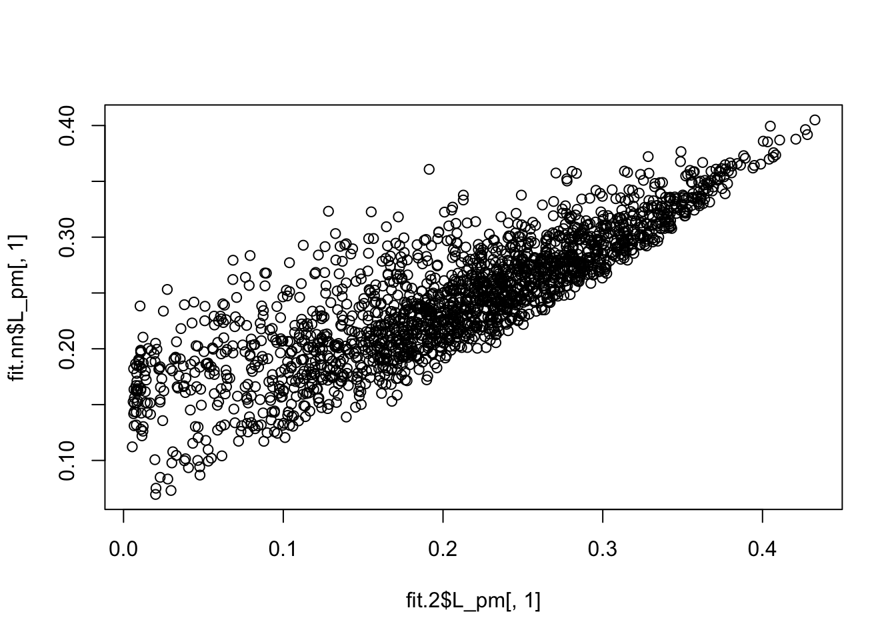
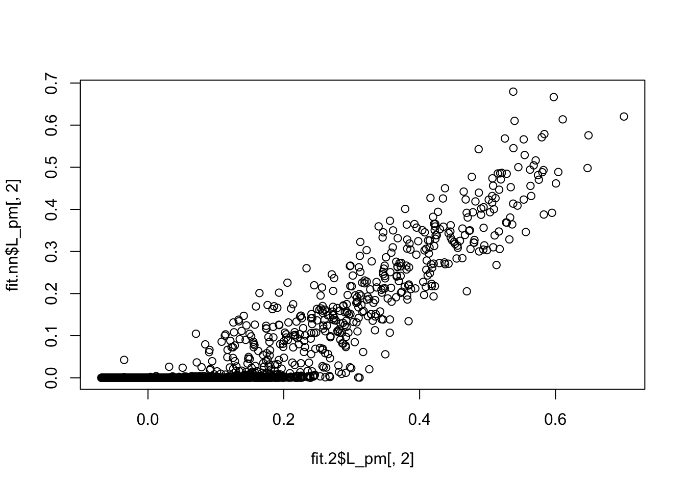
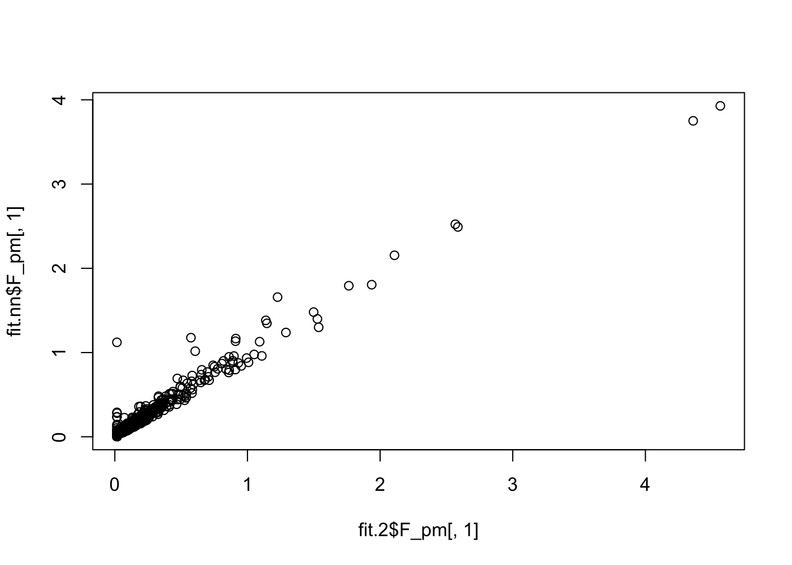
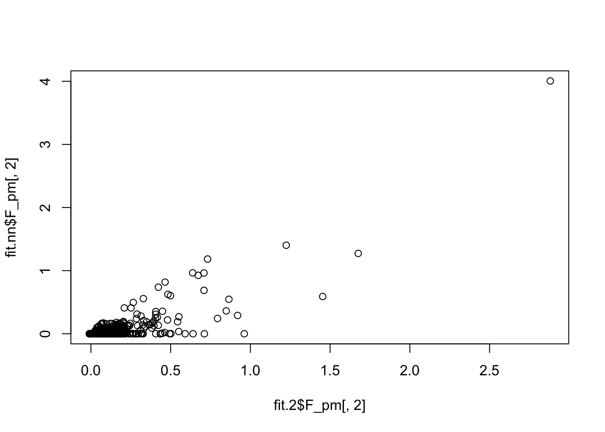

Last updated: 2023-11-10
Checks: 7 0
Knit directory: misc/analysis/
This reproducible R Markdown analysis was created with workflowr (version 1.7.0). The Checks tab describes the reproducibility checks that were applied when the results were created. The Past versions tab lists the development history.
Great! Since the R Markdown file has been committed to the Git repository, you know the exact version of the code that produced these results.
Great job! The global environment was empty. Objects defined in the global environment can affect the analysis in your R Markdown file in unknown ways. For reproduciblity it’s best to always run the code in an empty environment.
The command set.seed(1) was run prior to running the
code in the R Markdown file. Setting a seed ensures that any results
that rely on randomness, e.g. subsampling or permutations, are
reproducible.
Great job! Recording the operating system, R version, and package versions is critical for reproducibility.
Nice! There were no cached chunks for this analysis, so you can be confident that you successfully produced the results during this run.
Great job! Using relative paths to the files within your workflowr project makes it easier to run your code on other machines.
Great! You are using Git for version control. Tracking code development and connecting the code version to the results is critical for reproducibility.
The results in this page were generated with repository version 77bf15c. See the Past versions tab to see a history of the changes made to the R Markdown and HTML files.
Note that you need to be careful to ensure that all relevant files for
the analysis have been committed to Git prior to generating the results
(you can use wflow_publish or
wflow_git_commit). workflowr only checks the R Markdown
file, but you know if there are other scripts or data files that it
depends on. Below is the status of the Git repository when the results
were generated:
Ignored files:
Ignored: .DS_Store
Ignored: .Rhistory
Ignored: .Rproj.user/
Ignored: analysis/.RData
Ignored: analysis/.Rhistory
Ignored: analysis/ALStruct_cache/
Ignored: data/.Rhistory
Ignored: data/methylation-data-for-matthew.rds
Ignored: data/pbmc/
Untracked files:
Untracked: .dropbox
Untracked: Icon
Untracked: analysis/GHstan.Rmd
Untracked: analysis/GTEX-cogaps.Rmd
Untracked: analysis/PACS.Rmd
Untracked: analysis/Rplot.png
Untracked: analysis/SPCAvRP.rmd
Untracked: analysis/admm_02.Rmd
Untracked: analysis/admm_03.Rmd
Untracked: analysis/cholesky.Rmd
Untracked: analysis/compare-transformed-models.Rmd
Untracked: analysis/cormotif.Rmd
Untracked: analysis/cp_ash.Rmd
Untracked: analysis/eQTL.perm.rand.pdf
Untracked: analysis/eb_prepilot.Rmd
Untracked: analysis/eb_var.Rmd
Untracked: analysis/ebpmf1.Rmd
Untracked: analysis/ebpmf_sla_text.Rmd
Untracked: analysis/ebspca_sims.Rmd
Untracked: analysis/explore_psvd.Rmd
Untracked: analysis/fa_check_identify.Rmd
Untracked: analysis/fa_iterative.Rmd
Untracked: analysis/flash_test_tree.Rmd
Untracked: analysis/flash_tree.Rmd
Untracked: analysis/flashier_newgroups.Rmd
Untracked: analysis/greedy_ebpmf_exploration_00.Rmd
Untracked: analysis/ieQTL.perm.rand.pdf
Untracked: analysis/lasso_em_03.Rmd
Untracked: analysis/m6amash.Rmd
Untracked: analysis/mash_bhat_z.Rmd
Untracked: analysis/mash_ieqtl_permutations.Rmd
Untracked: analysis/methylation_example.Rmd
Untracked: analysis/mixsqp.Rmd
Untracked: analysis/mr.ash_lasso_init.Rmd
Untracked: analysis/mr.mash.test.Rmd
Untracked: analysis/mr_ash_modular.Rmd
Untracked: analysis/mr_ash_parameterization.Rmd
Untracked: analysis/mr_ash_ridge.Rmd
Untracked: analysis/mv_gaussian_message_passing.Rmd
Untracked: analysis/nejm.Rmd
Untracked: analysis/nmf_bg.Rmd
Untracked: analysis/normal_conditional_on_r2.Rmd
Untracked: analysis/normalize.Rmd
Untracked: analysis/pbmc.Rmd
Untracked: analysis/pca_binary_weighted.Rmd
Untracked: analysis/pca_l1.Rmd
Untracked: analysis/poisson_nmf_approx.Rmd
Untracked: analysis/poisson_shrink.Rmd
Untracked: analysis/poisson_transform.Rmd
Untracked: analysis/pseudodata.Rmd
Untracked: analysis/qrnotes.txt
Untracked: analysis/ridge_iterative_02.Rmd
Untracked: analysis/ridge_iterative_splitting.Rmd
Untracked: analysis/samps/
Untracked: analysis/sc_bimodal.Rmd
Untracked: analysis/shrinkage_comparisons_changepoints.Rmd
Untracked: analysis/susie_en.Rmd
Untracked: analysis/susie_z_investigate.Rmd
Untracked: analysis/svd-timing.Rmd
Untracked: analysis/temp.RDS
Untracked: analysis/temp.Rmd
Untracked: analysis/test-figure/
Untracked: analysis/test.Rmd
Untracked: analysis/test.Rpres
Untracked: analysis/test.md
Untracked: analysis/test_qr.R
Untracked: analysis/test_sparse.Rmd
Untracked: analysis/tree_dist_top_eigenvector.Rmd
Untracked: analysis/z.txt
Untracked: code/multivariate_testfuncs.R
Untracked: code/rqb.hacked.R
Untracked: data/4matthew/
Untracked: data/4matthew2/
Untracked: data/E-MTAB-2805.processed.1/
Untracked: data/ENSG00000156738.Sim_Y2.RDS
Untracked: data/GDS5363_full.soft.gz
Untracked: data/GSE41265_allGenesTPM.txt
Untracked: data/Muscle_Skeletal.ACTN3.pm1Mb.RDS
Untracked: data/Thyroid.FMO2.pm1Mb.RDS
Untracked: data/bmass.HaemgenRBC2016.MAF01.Vs2.MergedDataSources.200kRanSubset.ChrBPMAFMarkerZScores.vs1.txt.gz
Untracked: data/bmass.HaemgenRBC2016.Vs2.NewSNPs.ZScores.hclust.vs1.txt
Untracked: data/bmass.HaemgenRBC2016.Vs2.PreviousSNPs.ZScores.hclust.vs1.txt
Untracked: data/eb_prepilot/
Untracked: data/finemap_data/fmo2.sim/b.txt
Untracked: data/finemap_data/fmo2.sim/dap_out.txt
Untracked: data/finemap_data/fmo2.sim/dap_out2.txt
Untracked: data/finemap_data/fmo2.sim/dap_out2_snp.txt
Untracked: data/finemap_data/fmo2.sim/dap_out_snp.txt
Untracked: data/finemap_data/fmo2.sim/data
Untracked: data/finemap_data/fmo2.sim/fmo2.sim.config
Untracked: data/finemap_data/fmo2.sim/fmo2.sim.k
Untracked: data/finemap_data/fmo2.sim/fmo2.sim.k4.config
Untracked: data/finemap_data/fmo2.sim/fmo2.sim.k4.snp
Untracked: data/finemap_data/fmo2.sim/fmo2.sim.ld
Untracked: data/finemap_data/fmo2.sim/fmo2.sim.snp
Untracked: data/finemap_data/fmo2.sim/fmo2.sim.z
Untracked: data/finemap_data/fmo2.sim/pos.txt
Untracked: data/logm.csv
Untracked: data/m.cd.RDS
Untracked: data/m.cdu.old.RDS
Untracked: data/m.new.cd.RDS
Untracked: data/m.old.cd.RDS
Untracked: data/mainbib.bib.old
Untracked: data/mat.csv
Untracked: data/mat.txt
Untracked: data/mat_new.csv
Untracked: data/matrix_lik.rds
Untracked: data/paintor_data/
Untracked: data/running_data_chris.csv
Untracked: data/running_data_matthew.csv
Untracked: data/temp.txt
Untracked: data/y.txt
Untracked: data/y_f.txt
Untracked: data/zscore_jointLCLs_m6AQTLs_susie_eQTLpruned.rds
Untracked: data/zscore_jointLCLs_random.rds
Untracked: explore_udi.R
Untracked: output/fit.k10.rds
Untracked: output/fit.nn.rds
Untracked: output/fit.nn.s.001.rds
Untracked: output/fit.nn.s.01.rds
Untracked: output/fit.nn.s.1.rds
Untracked: output/fit.nn.s.10.rds
Untracked: output/fit.varbvs.RDS
Untracked: output/glmnet.fit.RDS
Untracked: output/test.bv.txt
Untracked: output/test.gamma.txt
Untracked: output/test.hyp.txt
Untracked: output/test.log.txt
Untracked: output/test.param.txt
Untracked: output/test2.bv.txt
Untracked: output/test2.gamma.txt
Untracked: output/test2.hyp.txt
Untracked: output/test2.log.txt
Untracked: output/test2.param.txt
Untracked: output/test3.bv.txt
Untracked: output/test3.gamma.txt
Untracked: output/test3.hyp.txt
Untracked: output/test3.log.txt
Untracked: output/test3.param.txt
Untracked: output/test4.bv.txt
Untracked: output/test4.gamma.txt
Untracked: output/test4.hyp.txt
Untracked: output/test4.log.txt
Untracked: output/test4.param.txt
Untracked: output/test5.bv.txt
Untracked: output/test5.gamma.txt
Untracked: output/test5.hyp.txt
Untracked: output/test5.log.txt
Untracked: output/test5.param.txt
Unstaged changes:
Modified: .gitignore
Modified: analysis/flashier_log1p.Rmd
Modified: analysis/flashier_sla_text.Rmd
Modified: analysis/mr_ash_pen.Rmd
Modified: analysis/susie_flash.Rmd
Note that any generated files, e.g. HTML, png, CSS, etc., are not included in this status report because it is ok for generated content to have uncommitted changes.
These are the previous versions of the repository in which changes were
made to the R Markdown
(analysis/flashier_nmf_shifted_prior.Rmd) and HTML
(docs/flashier_nmf_shifted_prior.html) files. If you’ve
configured a remote Git repository (see ?wflow_git_remote),
click on the hyperlinks in the table below to view the files as they
were in that past version.
| File | Version | Author | Date | Message |
|---|---|---|---|---|
| Rmd | 77bf15c | Matthew Stephens | 2023-11-10 | workflowr::wflow_publish("flashier_nmf_shifted_prior.Rmd") |
I wanted to try out the idea of using a shifted prior when doing NMF. The idea is that when greedily adding factors you can simultaneously “shift” the baseline factor so that it adjusts for the factors you add. However, this simple idea does not work very well in practice in this example, probably due to convergence issues (that may not be so easy to solve).
These steps are following ones in other files. I copy and pasted so there is more code here than I actually need….
library(Matrix)
library(readr)
library(tm)Loading required package: NLPlibrary(fastTopics)
library(flashier)Loading required package: ebnmLoading required package: magrittrLoading required package: ggplot2
Attaching package: 'ggplot2'The following object is masked from 'package:NLP':
annotatelibrary(ebpmf)
library(RcppML)RcppML v0.5.5 using 'options(RcppML.threads = 0)' (all available threads), 'options(RcppML.verbose = FALSE)'sla <- read_csv("../../gsmash/data/SLA/SCC2016/Data/paperList.txt")Rows: 3248 Columns: 5── Column specification ────────────────────────────────────────────────────────
Delimiter: ","
chr (3): DOI, title, abstract
dbl (2): year, citCounts
ℹ Use `spec()` to retrieve the full column specification for this data.
ℹ Specify the column types or set `show_col_types = FALSE` to quiet this message.sla <- sla[!is.na(sla$abstract),]
sla$docnum = 1:nrow(sla)
datax = readRDS('../../gsmash/data/sla_full.rds')
dim(datax$data)[1] 3207 10104sum(datax$data==0)/prod(dim(datax$data))[1] 0.9948157datax$data = Matrix(datax$data,sparse = TRUE)filtering
doc_to_use = order(rowSums(datax$data),decreasing = T)[1:round(nrow(datax$data)*0.6)]
mat = datax$data[doc_to_use,]
sla = sla[doc_to_use,]
samples = datax$samples
samples = lapply(samples, function(z){z[doc_to_use]})Filter out words that appear in less than 5 documents. Note: if you don’t do this you can still get real factors that capture very rare words co-occuring. Eg two authors that are cited together. If you are interested in those factors, no need to filter…
word_to_use = which(colSums(mat>0)>4)
mat = mat[,word_to_use]
mat = Matrix(mat,sparse=TRUE)lmat = Matrix(log(mat+1),sparse=TRUE)
docsize = rowSums(mat)
s = docsize/mean(docsize)
lmat_s_10 = Matrix(log(0.1*mat/s+1),sparse=TRUE)
lmat_s_1 = Matrix(log(mat/s+1),sparse=TRUE)
lmat_s_01 = Matrix(log(10*mat/s+1),sparse=TRUE)
lmat_s_001 = Matrix(log(100*mat/s+1),sparse=TRUE)Compute minimum variances/standard deviations.
mhat = 4/nrow(lmat)
xx = rpois(1e7,mhat) # random poisson
S10 = sd(log(0.1*xx+1))
S1 = sd(log(xx+1)) # sd of log(X+1)
S01 = sd(log(10*xx+1)) # sd if log(10X+1)
S001 = sd(log(100*xx+1)) # sd if log(10X+1)
print(c(S10,S1,S01,S001))[1] 0.004339581 0.031536221 0.109033434 0.209811829Define a function that estimates the mode instead of fixing it to 0.
ebnm_shift_point_exponential = function(x,s,g_init,fix_g,output){ebnm_point_exponential(x,s,g_init=g_init, fix_g = fix_g, output=output, mode="estimate")}The problems comes up on the second factor so I fit 2 factors.
set.seed(1)
fit.1 = flash(lmat_s_1,ebnm_fn = ebnm_shift_point_exponential, S=S1, greedy_Kmax = 2)Adding factor 1 to flash object...
Adding factor 2 to flash object...
Wrapping up...Warning in ebnm_workhorse(x = x, s = s, mode = mode, scale = scale, g_init =
g_init, : Since they're not well defined for nonzero modes, local false sign
rates won't be returned.
Warning in ebnm_workhorse(x = x, s = s, mode = mode, scale = scale, g_init =
g_init, : Since they're not well defined for nonzero modes, local false sign
rates won't be returned.
Warning in ebnm_workhorse(x = x, s = s, mode = mode, scale = scale, g_init =
g_init, : Since they're not well defined for nonzero modes, local false sign
rates won't be returned.
Warning in ebnm_workhorse(x = x, s = s, mode = mode, scale = scale, g_init =
g_init, : Since they're not well defined for nonzero modes, local false sign
rates won't be returned.Done.
Nullchecking 2 factors...
Done.Here we see that the L and F are non-sparse and far from non-negative. The fitted gs are shifted exponentials (essentially no point mass). Possibly flash is initializing using an unconstrained fit, so essentially PCA. Maybe part of a solution could be to initialize to non-negative?
plot(fit.1$L_pm[,2])
plot(fit.1$F_pm[,2])
fit.1$F_ghat[2][[1]]
$pi
[1] 6.072199e-18 1.000000e+00
$shape
[1] 1 1
$scale
[1] 0.0000 144.1321
$shift
[1] -144.129 -144.129
attr(,"class")
[1] "gammamix"
attr(,"row.names")
[1] 1 2fit.1$L_ghat[2][[1]]
$pi
[1] 4.422449e-07 9.999996e-01
$shape
[1] 1 1
$scale
[1] 0.00000000 0.00727064
$shift
[1] -0.006962347 -0.006962347
attr(,"class")
[1] "gammamix"
attr(,"row.names")
[1] 1 2Here I try initializing using point exponential and then relaxing.
fit.nn = flash(lmat_s_1,ebnm_fn = ebnm_point_exponential, S=S1, greedy_Kmax = 2)Adding factor 1 to flash object...
Adding factor 2 to flash object...
Wrapping up...
Done.
Nullchecking 2 factors...
Done.fit.2 = flash_init(lmat_s_1, S=S1)
fit.2 = flash_factors_init(fit.2, fit.nn, ebnm_fn = ebnm_shift_point_exponential)
fit.2 = flash_backfit(fit.2)Backfitting 2 factors (tolerance: 6.23e-02)...
Difference between iterations is within 1.0e+03...
Difference between iterations is within 1.0e+02...
Difference between iterations is within 1.0e+01...
Difference between iterations is within 1.0e+00...
Difference between iterations is within 1.0e-01...
Wrapping up...Warning in ebnm_workhorse(x = x, s = s, mode = mode, scale = scale, g_init =
g_init, : Since they're not well defined for nonzero modes, local false sign
rates won't be returned.
Warning in ebnm_workhorse(x = x, s = s, mode = mode, scale = scale, g_init =
g_init, : Since they're not well defined for nonzero modes, local false sign
rates won't be returned.
Warning in ebnm_workhorse(x = x, s = s, mode = mode, scale = scale, g_init =
g_init, : Since they're not well defined for nonzero modes, local false sign
rates won't be returned.
Warning in ebnm_workhorse(x = x, s = s, mode = mode, scale = scale, g_init =
g_init, : Since they're not well defined for nonzero modes, local false sign
rates won't be returned.Done.We can see the original non-negative fit produces very sparse factors:
plot(fit.nn$L_pm[,2])
plot(fit.nn$F_pm[,2])
But the refit produces something much less sparse, again with no point mass at 0.
plot(fit.2$L_pm[,2])
plot(fit.2$F_pm[,2])
fit.2$L_ghat[2][[1]]
$pi
[1] 1.578854e-05 9.999842e-01
$shape
[1] 1 1
$scale
[1] 0.0000000 0.1906966
$shift
[1] -0.07448485 -0.07448485
attr(,"class")
[1] "gammamix"
attr(,"row.names")
[1] 1 2fit.2$F_ghat[2][[1]]
$pi
[1] 4.148026e-15 1.000000e+00
$shape
[1] 1 1
$scale
[1] 0.0000000 0.0554266
$shift
[1] -0.01173853 -0.01173853
attr(,"class")
[1] "gammamix"
attr(,"row.names")
[1] 1 2I thought this might still be a convergence issue, but it seems that the elbo is better for the relaxed fit.
fit.2$elbo - fit.nn$elbo[1] 12080.06Here is a direct comparison of the two fits; quite a big difference.
plot(fit.2$L_pm[,1],fit.nn$L_pm[,1])
plot(fit.2$L_pm[,2],fit.nn$L_pm[,2])
plot(fit.2$F_pm[,1],fit.nn$F_pm[,1])
plot(fit.2$F_pm[,2],fit.nn$F_pm[,2])
sessionInfo()R version 4.2.1 (2022-06-23)
Platform: x86_64-apple-darwin17.0 (64-bit)
Running under: macOS Big Sur ... 10.16
Matrix products: default
BLAS: /Library/Frameworks/R.framework/Versions/4.2/Resources/lib/libRblas.0.dylib
LAPACK: /Library/Frameworks/R.framework/Versions/4.2/Resources/lib/libRlapack.dylib
locale:
[1] en_US.UTF-8/en_US.UTF-8/en_US.UTF-8/C/en_US.UTF-8/en_US.UTF-8
attached base packages:
[1] stats graphics grDevices utils datasets methods base
other attached packages:
[1] RcppML_0.5.6 ebpmf_2.3.2 flashier_1.0.0 ggplot2_3.4.3
[5] magrittr_2.0.3 ebnm_1.0-55 fastTopics_0.6-158 tm_0.7-11
[9] NLP_0.2-1 readr_2.1.4 Matrix_1.5-3
loaded via a namespace (and not attached):
[1] Rtsne_0.16 ebpm_0.0.1.3 colorspace_2.1-0
[4] smashr_1.2-9 ellipsis_0.3.2 rprojroot_2.0.3
[7] fs_1.6.3 rstudioapi_0.14 MatrixModels_0.5-1
[10] ggrepel_0.9.3 bit64_4.0.5 fansi_1.0.5
[13] mvtnorm_1.2-3 xml2_1.3.3 splines_4.2.1
[16] cachem_1.0.7 knitr_1.42 jsonlite_1.8.7
[19] workflowr_1.7.0 nloptr_2.0.3 mcmc_0.9-7
[22] ashr_2.2-63 smashrgen_1.2.5 uwot_0.1.14
[25] compiler_4.2.1 httr_1.4.5 RcppZiggurat_0.1.6
[28] fastmap_1.1.1 lazyeval_0.2.2 cli_3.6.1
[31] later_1.3.0 htmltools_0.5.4 quantreg_5.94
[34] prettyunits_1.2.0 tools_4.2.1 coda_0.19-4
[37] gtable_0.3.4 glue_1.6.2 dplyr_1.1.3
[40] Rcpp_1.0.11 softImpute_1.4-1 slam_0.1-50
[43] jquerylib_0.1.4 vctrs_0.6.4 wavethresh_4.7.2
[46] xfun_0.37 stringr_1.5.0 trust_0.1-8
[49] lifecycle_1.0.3 irlba_2.3.5.1 MASS_7.3-58.2
[52] scales_1.2.1 vroom_1.6.1 hms_1.1.2
[55] promises_1.2.0.1 parallel_4.2.1 SparseM_1.81
[58] yaml_2.3.7 pbapply_1.7-0 sass_0.4.5
[61] stringi_1.7.12 SQUAREM_2021.1 highr_0.10
[64] deconvolveR_1.2-1 caTools_1.18.2 truncnorm_1.0-9
[67] horseshoe_0.2.0 rlang_1.1.1 pkgconfig_2.0.3
[70] matrixStats_1.0.0 bitops_1.0-7 evaluate_0.22
[73] lattice_0.20-45 invgamma_1.1 purrr_1.0.2
[76] htmlwidgets_1.6.1 bit_4.0.5 Rfast_2.0.8
[79] cowplot_1.1.1 tidyselect_1.2.0 R6_2.5.1
[82] generics_0.1.3 pillar_1.9.0 whisker_0.4.1
[85] withr_2.5.1 survival_3.5-3 mixsqp_0.3-48
[88] tibble_3.2.1 crayon_1.5.2 utf8_1.2.3
[91] plotly_4.10.2 tzdb_0.3.0 rmarkdown_2.20
[94] progress_1.2.2 grid_4.2.1 data.table_1.14.8
[97] git2r_0.31.0 digest_0.6.33 vebpm_0.4.9
[100] tidyr_1.3.0 httpuv_1.6.9 MCMCpack_1.6-3
[103] RcppParallel_5.1.7 munsell_0.5.0 viridisLite_0.4.2
[106] bslib_0.4.2 quadprog_1.5-8